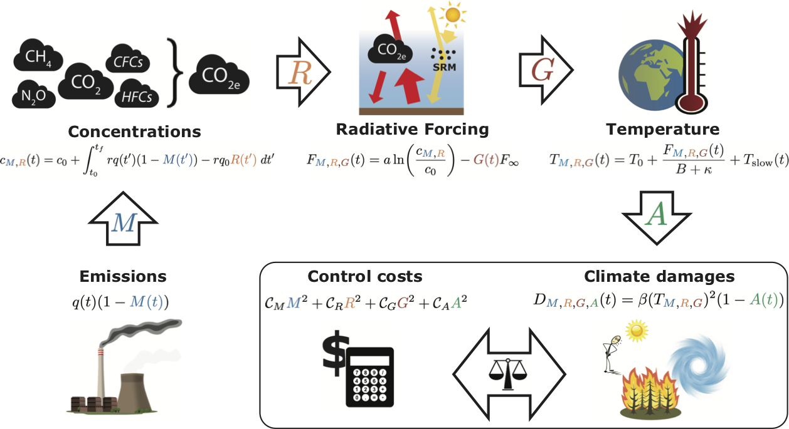

Theory
The causal chain of climate suffering
It is helpful to conceptualize climate change as a four step process that connects the human-caused emissions of greenhouse gases (GHGs) to the eventual climate suffering (or damages) that they cause. This four-step framing reflects the four major human controls (or controls) which can sever these links to reduce climate suffering: Mitigation of GHG emissions (e.g. switching away from fossil fuels), Removal of carbon dioxide from the atmosphere (e.g. by planting trees or storing biofuel emissions underground), Geoengineering by solar radiation management (e.g. injecting sulfate aerosols into the stratosphere to reduce incoming sunlight), or Adapting to the changed climate (e.g. relocating coastal communities displaced by rising seas or expanding indoor air condititiong to fight off intensifying heat waves).
Letting climate change run rampant would clearly cause a lot of suffering; however, climate controls that keep climate change under control are not free either. MARGO empowers users to explore the trade-offs between climate controls and climate suffering by employing an optimization framework commonly used in the climate-economics community. In this section, we develop a simple theory– a set of mathematical equations– which capture the key aspects of the entire causal chain of climate damages.

We have attempted to make reasonable choices for the default values of MARGO's parameters in the equations below. Some of these, such as the climate physics variables, are well justified based on the best climate science research; others, such as the socio-economic parameters, are chosen based on our values (or those represented in the academic climate change literature). We encourage users to question these choices and plug their own values into ClimateMARGO. If you feel strongly that we should change some of the default values included in the model code, please reach out to us by opening an issue on Github.
Greenhouse gas emissions
While greenhouse gases include more than just the dominant carbon dioxide (CO$_{2}$), it simplifies things greatly to just bundle these into an equivalent concentration CO$_{2e}$. In MARGO, CO$_{2e}$ is emitted at a rate $q(t)$, with only a fraction $r = 50\%$ remaining in the atmosphere after a few years, net of uptake by the ocean and terrestrial biosphere.
GHG emissions are reduced by a Mitigation factor $(1-M(t))$, becoming $q(t)(1-M(t))$, where $M(t)$ varies between 0% (high-emissions baseline) and 100% (full decarbonization).
Greenhouse gas concentrations
CO$_{2e}$ continues to accumulate in the atmosphere and its concentrations $c(t)= c_{0} + \int_{t_{0}}^{t} rq(t)\text{ d}t\,$ will increase as long as the emissions $q(t)$ are greater than zero.
Removal of CO$_{2e}$, in contrast to mitigation, is de-coupled from instantaneous emissions and is expressed as the percentage of 2020 baseline emissions that are removed from the atmosphere in a given year, $q_{0}R(t)$. A maximal value of $R=100\%$ corresponds to removing $30$ GtCO$_{2e}$ per year, which is roughly equal to a recent upper-bound estimate of the global potential for negative emission technologies.
A useful diagnostic quantity is the effective emissions
which is the annual rate of CO$_{2e}$ accumulation in the atmosphere, including negative contributions from both emissions mitigation and CDR.
The change in CO$_{2e}$ concentrations is simply the integral of the effective emissions over time,
Radiative forcing
Increasing CO$_{2e}$ concentrations strengthen the greenhouse effect, reducing outgoing longwave radiation and causing an increased radiative forcing of $F(t) = a \ln(c(t)/c_{0})$, which exerts a warming effect on Earth's surface.
Geoengineering by solar radiation management acts to offset a fraction of the CO$_{2e}$ forcing,
where $F_{M,R} = a \ln(c_{M,R}(t) / c_{0})$ is the controlled CO$_{2e}$ forcing (i.e. accounting for any mitigation and carbon dioxide removal) and $F_{\infty} = 8.5$ W/m$^{2}$ is the maximum baseline CO$_{2e}$ forcing, which is attained starting in 2150 when baseline emissions are assumed to reach zero. A value of $G = 100\%$ thus corresponds to a complete cancellation between the equilibrium warming from baseline CO$_{2e}$ increases and the cooling from a full deployment of SRM.
Global warming and climate suffering
Near-surface air temperatures eventually increase by $T(t) = F(t)/B$ to balance the reduced cooling to space, where $B/(\kappa + B) = 60\%$ of the warming occurs within a few years and the remaining $\kappa/(B + \kappa) = 40\%$ occurs over the course of several centuries due to ocean heat uptake. The feedback parameter $B$ includes the effects of all climate feedbacks, except those involving the carbon cycle and the long-term ice sheet response, and the ocean heat uptake rate $\kappa$ parameterizes the combined effects of advection and diffusion of heat into the deep ocean.
More specifically, the controlled near-surface air temperature evolves according to the total controlled forcing,
where $T_{0} = 1.1$°C is the present warming relative to preindustrial and $\tau_{D} = 240$ years is the slow timescale of ocean heat uptake. The first term on the right-hand side represents a fast transient response while the second term represents a slow recalcitrant response due to the thermal inertia of the deep ocean. Climate inertia decouples the temperature response from instantaneous forcing and implies that an additional fraction of short-term warming (or cooling) is locked in for the future, even if radiative forcing is stabilized, as in the case of bringing emissions to zero in our model.
Anthropogenic warming causes a myriad of climate impacts, which result suffering (expressed in an economic model as a loss in welfare or monetary damages) that increase non-linearly with temperature, $D = \beta T^{2}$, where the damage parameter $\beta$ is tuned such that a warming of $3$°C results in damages of the $2\%$ of Gross World Product (GWP), consistent with DICE in the limit of non-catastrophic warming.
Adaptation to climate impacts acts to reduce damages by a fraction $A(t)$. Since some climate impacts are likely impossible to adapt to, we assume that adaptation can at most reduce climate damages by $A < 40\%$. The controlled damages are thus given by
Although adaptation does not affect the planetary temperature directly, it is useful to consider an "adapted temperature" $T_{M,R,G,A}$ which yields controlled damages equivalent to the fully-controlled damages $\beta (T_{M,R,G,A})^{2} = \beta (T_{M,R,G})^{2} (1-A)$ and is defined
The costs and benefits of climate control
Control costs are summed up across each of the four controls:
where the $C_{*}$ are the hypothetical annual costs of fully deploying that control and the cost functions are assumed to be convex functions of fractional deployment with zero initial marginal cost and are here all taken to be quadratic for simplicity.
The benefits of deploying climate controls are the avoided climate damages relative to the high-emissions no-policy baseline scenario,
Optimization: what makes a climate "optimal"?
We use "optimal" in the mathematical sense of "optimization", i.e. the search for the maximum or minimum value of a given "objective function", which depends on a set of "control variables". Control variables are variables with unknown values that are solved for, and are different from known "parameters" which are input by the user. For example, the full set of control variables in MARGO is $\{M(t), R(t), G(t), A(t)\}$ (with $N$ timesteps in time). An objective function is any scalar-valued function of the control variables, meaning it only produces a single value (as opposed to a multi-valued vector). Optimizing MARGO largely consists of defining the objective function to optimize. For example, one might aim to minimize the total costs of climate controls.
An optimization problem can further be customized by added constraints on valid sets of the control variables. For example, in MARGO we impose the constraints $0\% < M(t) < 100\%$ because it does not make any sense to mitigate emissions less than 0\% or more than 100\% (carbon dioxide removal is treated separately by the $R(t)$ control variable). Similarly, we rule out any combination of control variables that produces unphysical outcomes like negative CO$_{2e}$ concentrations.
Constraints can often be used to add meaning to an otherwise meaningless optimization problem. Consider the example above of minimizing the net costs of climate controls. Without any additional constraints, the solution to the problem is... to do nothing. Zero climate controls costs zero dollars. Suppose we now add in a constraint that the temperature change relative to pre-industrial must not exceed 2°C. While doing nothing still carries no climate control costs, it is no longer a solution to the problem since the resulting warming will overshoot the constraint by several degrees celsius. To see the solution to this problem, see the Optimization of the default MARGO configuration example.
Learn more about the currently implemented objective functions and constraints in Optimization.